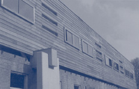
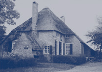
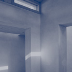

Welstandszorg Noord-Brabant
De welstandsadvisering in met merendeel van de Brabantse gemeenten is toevertrouwd aan Welstandszorg Noord-Brabant.
|  |  |  |
Vijfenvijftig van de negenenzestig Brabantse gemeenten maken gebruik van
haar diensten. Deze vijfenvijftig gemeenten zijn onderverdeeld in elf
rayons. In elk rayon is een welstandscommissie werkzaam, bestaande uit
vier leden: een voorzitter en drie ervaren architecten, van wie één
in vaste dienst is bij Welstandszorg Noord-Brabant. Hij is tevens de secretaris
van de commissie en onderhoudt de contacten met de gemeenten. De beide
andere architectleden hebben een eigen praktijk, gevestigd buiten het
rayon, zodat vermenging van belangen wordt voorkomen. De leden worden
aangesteld voor een periode van vier jaar, die één keer
verlengd kan worden. De zittingsperiodes van de leden overlappen elkaar,
zodat de continuïteit in de advisering gewaarborgd wordt.
Een deel van de bouwplannen wordt niet door de voltallige commissie behandeld, maar door een kleine commissie bestaande uit twee secretarissen. Dit deel van de plannen betreft minder ingrijpende bouwwerken en verbouwingen en grotere standaardaanvragen zoals landbouwschuren en kassen.
Bij de beoordeling van de bouwplannen worden steeds drie vragen gesteld:
- Past het gebouw in de omgeving?
- Past het plan in de te verwachten toekomstige ontwikkelingen van die omgeving?
- Is het gebouw op zich samenhangend en evenwichtig vormgegeven?